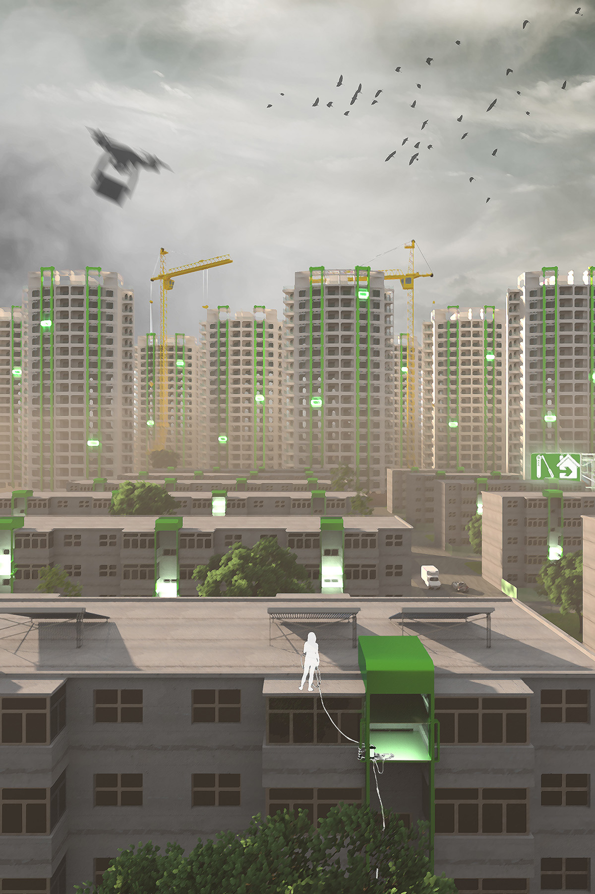

HOME PORT
How can power exert in the name of protection?
How to reconceptualize wellbeing in a controlled life?
What if restrictions come as green instead of red?
While the 2022 Shanghai COVID lockdown shocked Chinese social media for the revelation of power struggles against the 'the wellbeing of everyone' as interpreted
by political authorities, similar enforcement actions draw limited discussion in less-known cities across the country under the social consensus of following
collective wills in public life. With inactive economies and aging populations producing limited demand for personal mobility, the post-industrial cities of
Hebei Province saw recurring lockdown actions, such as barricading high-risk blocks and sealing the doors of individual households. On the other hand,
the sporadic online comments from local people focus more on the 'avoidable roughness' of interventions that disrupt their residential life, rather than asking for the legal basis of such actions.
To challenge the existing fine lines of socio-political controls and provoke discussions on the spatial construction of personal wills,
this project reimagines the 'Danwei' housing type of Tangshan in Hebei Province as a replicable lockdown model toward alternative wellbeing
through an architectural installation named HOME PORT. It implements progressive control on personal mobility by gating residential buildings
with layered fences while adding smart lift access to the window openings of individual households. While the system handles packages and
COVID self-test mandates at windowsills without interrupting indoor activities, the plantation of green canopies leaves only relaxing views
to residents at home. By demonstrating an alternative 2022 with a pilot HOME PORT installation in the to-be-demolished Gangyaoli neighborhood
of Tangshan, the project reinterprets blockage as port, control as protection, and red as green to question the social consensus of wellbeing
across the media-ignored cities of China in a time of uncertainty.

